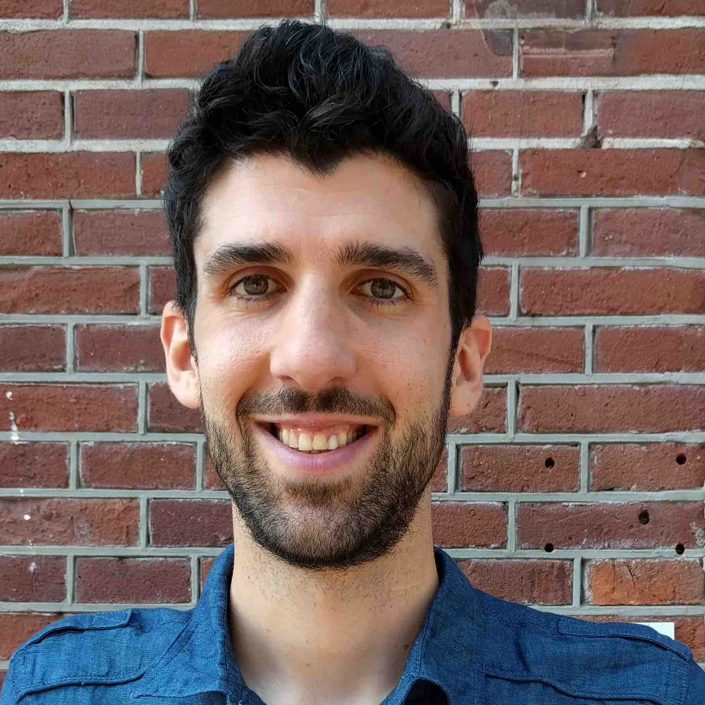

Assistant Professor
Department of Political Science
Aarhus University
Email: akevins at ps.au.dk
My research is focused on the interplay between public opinion and policy, in particular vis-à-vis social policy and marginalised groups. Some of the questions I've explored include: What factors shape the relationship between societal insiders and outsiders? How can we best understand social policy preferences? And what drives social programme reform?
I currently hold a 3-year Assistant Professorship in the Department of Political Science at Aarhus University, where I am affiliated with the UNIWEL (Universalism and the Welfare State) research project. My research here has concentrated on middle-class commitment to universalism and redistribution, culminating in a 10-country survey project on the topic.
My PhD is from McGill University's Department of Political Science, where I worked with Stuart Soroka. While at McGill, I explored the dilemma leftist parties and unions face when confronted with coverage gaps under austerity, as they choose between two problematic options: either extending coverage and retrenching the "good" benefits given to "insiders"; or maintaining the protection, coverage, and benefits of the relatively well-off at the expense of a growing class of excluded "outsiders".
As of September 2017, I will be a Marie Curie Research Fellow at Utrecht University's School of Governance. My project will examine preferences for unequal representation, seeking to uncover when and why citizens believe that certain societal groups deserve to have their voices amplified or ignored in the policy process.
You can find more details about my ongoing and past research projects here or via my CV.